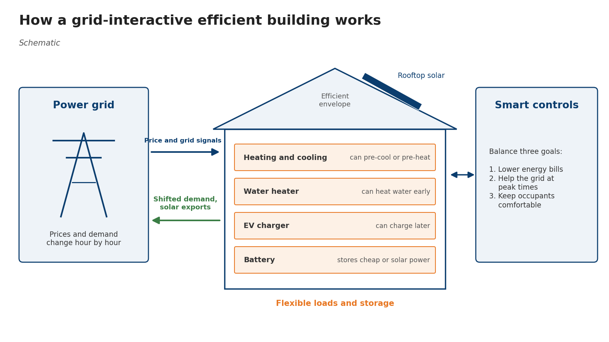

Grid-Interactive Efficient Buildings (NREL)
Summer 2024 work with the National Renewable Energy Laboratory on how homes can cut energy costs and support the grid.
- Completed
- 2024
- Buildings
- Grid flexibility
- Building simulation
- Education

In plain English
Grid-interactive efficient buildings are energy-efficient buildings whose smart equipment, solar panels or batteries can shift when they use power. By responding to grid prices and conditions, they can lower energy bills, help the grid at peak times and keep occupants comfortable. How much a building can do depends on how it is built: a leaky home with no smart controls and no solar has little to shift.
Through the Department of Energy's FACES program in summer 2024, Dr. Jones worked with the National Renewable Energy Laboratory (NREL) on who can share in these benefits. The work combined home energy simulations (BEopt and EnergyPlus), experiment runs in NREL's Systems Performance Lab, and Texas grid (ERCOT) price data, to see when a home's demand and solar output line up with high-price hours. It asked how occupant behavior, building quality, retrofits and control strategies change a building's energy profile. The main output is an openly published course module, Deployment of Grid-Interactive and Efficient Buildings, on OpenEI.
Main points
- Asked how occupant behavior, building quality, retrofits and the energy transition each shape a building's energy use and its value to the grid.
- Modeled homes in BEopt and EnergyPlus with 2021 Dallas–Fort Worth weather and 2021 ERCOT wholesale price data.
- Ran building experiments in NREL's Systems Performance Lab at the Energy Systems Integration Facility.
- Published an upper-level undergraduate course module with five activities and five readings on building simulation, occupant behavior, energy justice, retrofits and grid-interactive buildings.
Papers, code and materials
People
- Erick C. Jones Jr., PhD, PEDOE FACES Fellow at NREL (Summer 2024)in
Profiles marked in link to LinkedIn. More past and present lab members are on the SEAR Lab team page.